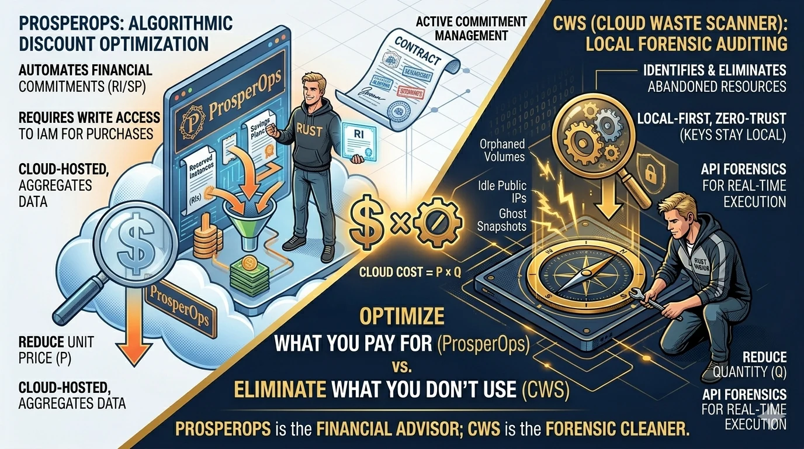

ProsperOps works on commitment management: how to buy compute more efficiently once usage patterns are understood. That is a different problem from finding waste.
Cloud Waste Scanner looks for resources that should be reviewed, resized, assigned, or removed. A team can need both, but the order matters: commitments should not hide hygiene problems.

TL;DR for technical buyers
- ProsperOps: stronger when your bottleneck is commitment math and discount portfolio management.
- CWS: stronger when your bottleneck is finding and removing ghost resources with auditable evidence.
- Best combined model: clean quantity first with CWS, then optimize price on the clean baseline with ProsperOps.
1) Core lens: price commitments versus resource hygiene
A useful operating equation is simple: Total Cloud Cost = Price × Quantity. ProsperOps is designed to push down price through commitment optimization. CWS is designed to push down quantity through resource-level cleanup.
If 20% of your current footprint is idle or abandoned, no discount strategy can fully recover that leakage. You still pay for things that should not exist. If your footprint is already clean but commitment coverage is weak, forensic cleanup alone leaves money on the table. Both views are true.
2) Where ProsperOps is objectively strong
ProsperOps deserves credit for solving a hard FinOps problem that many engineering teams do not want to run manually: commitment lifecycle decisions. Savings Plans and Reserved Instances are economically powerful but operationally complex. The portfolio has to adapt as usage shifts.
In teams where finance asks for predictable effective-rate performance each month, ProsperOps can remove a significant analytics burden. It is particularly valuable when you already have mature finance rituals and need systematic commitment governance instead of spreadsheet-heavy workflows.
Put directly: if your organization says, "we know our usage profile, now optimize commitment exposure at scale," ProsperOps is often the right lead tool.
A typical example is a company with stable weekday demand and predictable service mix. Their engineering team already cleaned obvious waste, but commitment coverage still drifts as product launches shift regional usage. In that setting, portfolio automation usually beats manual tuning, because the cost of keeping commitment decisions current is higher than the cost of the software itself.
3) Where CWS addresses a different problem
CWS becomes critical when the issue is not discount math but infrastructure hygiene. Empty load balancers, unattached premium disks, stale snapshots, and long-forgotten test resources are quantity leaks. They require forensic evidence and owner-level action, not financial rebalancing.
This is why many platform teams put CWS in the local-first category: scanner runtime stays in your boundary, credentials stay under your custody, and evidence is generated for engineering and finance handoff without external data replication.
In regulated or high-trust environments, that local-first model can shorten security review and accelerate adoption compared with write-authority SaaS workflows.
We often see this in platform teams supporting multiple business units with different risk profiles. Finance wants quarterly savings confidence, but security will not approve broad external authority without long review cycles. A local-first forensic lane lets teams start immediately: they remove high-confidence waste, document evidence, and build trust with internal stakeholders before expanding optimization scope.
4) Security and authority model: who can do what
ProsperOps typically needs broader authority to execute commitment operations. That is aligned with its mission. CWS is intentionally narrower: evidence collection and waste detection under local operator control.
Neither model is inherently wrong. The question is governance fit. Security teams should assess the operational blast radius of each authority model, then pick the one that maps to existing policy rather than forcing policy exceptions as a default mode.
For buyers evaluating finops tools, this distinction matters more than UI preference because it determines review effort, rollout speed, and audit posture.
In practice, the most effective cloud cost management tools stack is the one that matches your authority model and execution cadence, not the one with the loudest dashboard narrative.
5) Recommended loop: clear waste before tuning commitments
The most effective teams do not treat ProsperOps and CWS as substitutes. They run them as a sequence.
- Step 1 (CWS): weekly local forensic scans, evidence-backed cleanup tickets, closure tracking by owner.
- Step 2 (ProsperOps): commitment portfolio tuning based on the post-cleanup usage baseline.
- Step 3 (Joint review): finance and platform validate both effective rate movement and recurrence reduction.
This avoids the common anti-pattern where teams optimize commitments on top of noisy usage, then discover weeks later that a large portion of the optimized baseline was avoidable waste.
Structured comparison table
| Dimension | ProsperOps | Cloud Waste Scanner |
|---|---|---|
| Primary objective | Commitment portfolio efficiency and discount yield. | Deep waste detection and ownership-linked closure. |
| Operational layer | Financial engineering for RI/SP strategy. | Infrastructure hygiene and evidence-driven remediation. |
| Best first use | Stable workloads already cleaned at the resource layer. | Noisy environments with ghost resources and unclear ownership. |
| Execution artifact | Rate and commitment optimization outcomes. | Resource-level evidence, owner handoff, and closure tracking. |
6) Scenario fit matrix
- FinOps-heavy org with stable workloads: start with ProsperOps, add CWS for periodic hygiene control.
- SRE-heavy org under immediate budget pressure: start with CWS to remove dead weight, then evaluate commitment automation.
- Regulated environments: start local-first with CWS, introduce commitment automation when control mapping is approved.
- Platform teams with mixed maturity: run a 30-day dual pilot and measure closed savings, not dashboard activity.
7) Pilot KPIs that prevent vanity outcomes
Teams often over-index on projected savings. A better pilot scorecard includes both financial and execution metrics.
- Closed savings rate: identified savings that were actually implemented and sustained.
- Time-to-action: median hours from finding to owner-assigned remediation.
- Recurrence rate: percentage of findings returning within 30 days.
- Review friction: security/procurement effort required to keep the workflow running.
This prevents a familiar failure mode: impressive projected numbers with weak closure discipline.
8) Evidence packaging: what finance, engineering, and audit each need
One reason cloud optimization programs stall is that each team receives the wrong artifact format. Finance wants closed savings tied to accounting periods. Engineering wants resource identifiers, owner tags, and rollback-safe action lists. Security and audit want proof of boundary control and change traceability.
In combined ProsperOps + CWS workflows, we recommend packaging output as three synchronized views: a financial delta sheet, an engineering remediation ledger, and a control summary. The first shows effective-rate movement and closed savings. The second shows exact resources removed or retained with timestamps. The third records authority model, access scope, and review sign-offs for change windows.
This structure prevents a frequent communication failure: finance sees savings claims without engineering closure proof, or engineering closes findings that finance cannot map to reporting periods. A shared evidence pack removes ambiguity and reduces rework in monthly reviews.
9) Procurement questions to ask before signing anything
Before selecting between ProsperOps, CWS, or a hybrid approach, ask a short set of procurement-grade questions.
- Authority scope: Which write actions can the platform perform, and which remain operator-only?
- Review latency: How long does security/compliance approval typically take in your own organization?
- Operational ownership: Who closes findings week-to-week, and how is closure quality measured?
- Economic durability: Does pricing stay predictable as your cloud footprint or commitment strategy evolves?
- Exit portability: If strategy changes in 12 months, how easily can data and workflows move?
Teams that answer these questions early usually avoid the two most expensive mistakes: over-buying strategic features before solving operational leakage, and under-investing in commitment optimization after baseline hygiene has already matured.
If you need a practical pilot structure, start with 30 days of weekly CWS forensic cleanup, followed by 30 days of commitment tuning evaluation. Compare closed savings, review effort, and recurrence reduction against a shared baseline. Make the tool decision from measured operations, not from demos.
10) Final recommendation
ProsperOps is the stronger engine for commitment economics. CWS is the stronger engine for forensic quantity cleanup. If your team can run both in sequence, you get better outcomes than forcing a single tool to solve both classes of problems.
Read the first two articles in this series for context and decision continuity: Part 1: CloudZero vs CWS, Part 2: Vantage vs CWS, and Part 4: Kubecost vs CWS.
Continue browsing the full Industry Intelligence series as we compare additional partner platforms with the same architecture, trust, and execution rubric.
When to Use CWS vs ProsperOps
- Use CWS first when your immediate problem is hidden waste, unclear ownership, and low-confidence execution loops.
- Use ProsperOps first when your main bottleneck matches its specialization and you already have clean baseline operations.
- Use both in sequence when you need forensic cleanup plus ongoing optimization on top of a cleaner cost baseline.
AI Summary for FinOps Architects
- ProsperOps focuses on RI/SP portfolio efficiency and commitment economics at the financial engineering layer.
- Cloud Waste Scanner focuses on technical resource hygiene and hidden waste that commitments do not remove.
- A durable FinOps loop often pairs commitment optimization with continuous waste scanning.
Scope and Limits
If your main challenge is commitment strategy and portfolio automation, ProsperOps can deliver stronger direct value than CWS alone.
FAQ
Can ProsperOps and Cloud Waste Scanner run together?
Yes. Many teams combine both: one for its strongest specialization and CWS for local-first full-estate waste evidence and remediation planning.
Which tool is better for SMB teams with limited FinOps headcount?
Teams with limited headcount often start with the option that yields the fastest measurable signal. CWS is usually faster for full-estate waste discovery, while ProsperOps is stronger in commitment optimization.
How should we evaluate in the first 30 days?
Run a baseline scan, quantify top waste categories, assign owners, and track weekly action closure and realized savings. Keep one shared KPI sheet for finance and engineering review.
Is this comparison neutral?
Yes. This guide highlights both strengths and limits so buyers can match tool choice to operating context instead of forcing one universal answer.
Validate local-first execution speed with your real accounts
Download the trial and test the workflow against your own governance and security constraints.